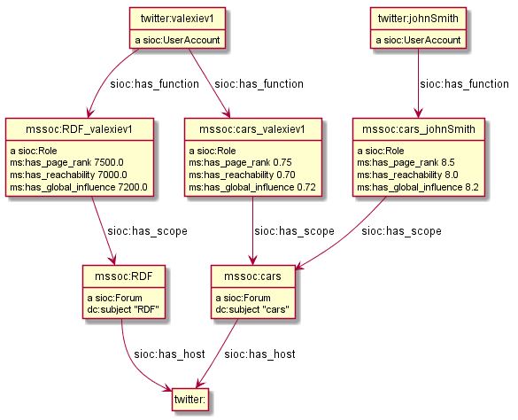
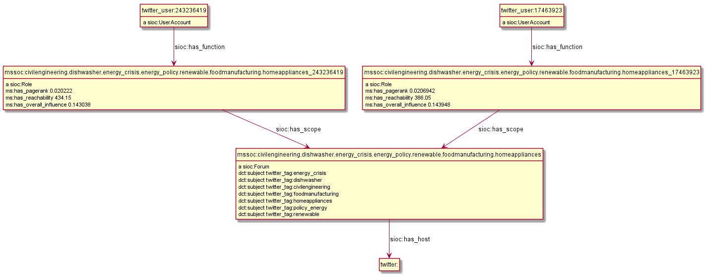

Materials related to FP7 Multisensor
Table of Contents
- Multisensor Linked Data: web presentation 2014-05-19, Barcelona
1 Linguistic Linked Data
There's been a huge drive in recent years to represent NLP data as RDF. NLP data is usually large, so does it make sense to represent it as RDF? What's the benefit?
- Ontologies, schemas and groups include: GRaF ITS2 FISE LAF LD4LT LEMON LIME LMF MARL NERD NIF NLP2RDF OLIA OntoLex OntoLing OntoTag Penn Stanford… my oh my!
- There are a lot of linguistic resources available that can be used profitably: BabelNet FrameNet GOLD ISOcat LemonUBY Multitext OmegaNet UBY VerbNet Wiktionary WordNet.
The benefit is that RDF offers a lot of flexibility for combining data on many different topics in one graph.
- Linguistic Linked Data: presentation, 2014-10-08, Bonn, Germany
- Zotero Linguistic LD bibliography
- Multisensor NER Mapping (html), (org): representing Named Entity Recognition in NIF and NIF Validation
- Integrating FrameNet in NIF
Examples (a few more are explained in Multisensor-NER-Mapping):
- ./NIF-example.ttl: NLP data in RDF (Turtle). Covers NIF (text binding), OLIA (linguistic properties), Penn (POS tagging), Stanford (dependency parsing), ITS20 (semantic annotation), NERD (entity extraction classes), Stanbol/FISE (multiple NLP tools/annotations per word/phrase), MARL (opinion/sentiment); and use of entities from DBpedia, WordNet, YAGO.
- ./NIF-example.ttl.html: syntax-highlighted with Emacs
- ./NIF-example.jsonld: same in JSONLD, shows that Turtle should be used for examples/discussion/QA and JSONLD for machine communication only
- ./NIF-example2.ttl: example of NER as produced by LT (doesn't yet include all fields from the NER Mapping above).
- ./NIF-example2.ttl.html: syntax-highlighted with Emacs
- ./NIF-example2.json: same in JSON-LD
- ./NIF-example3.ttl: Various kinds of Named Entities as per Multisensor-NER-Mapping
- ./NIF-example3.ttl.html: syntax-highlighted with Emacs
- ./NIF-example4.ttl: sentiment with MARL
- ./NIF-example4.jsonld: same in JSONLD
Issues I've found in NIF:
- Issue 1: nif:opinion vs marl:extractedFrom. Example: ./NIF-issue-1.ttl
- Issue 2: itsrdf vs fise properties. Example: ./NIF-issue-2.ttl
2 Social Linked Data
SMAP is a MS module that does network analysis over social networks. It gets some tweets based on keywords or hashtags, and then determines the importance of various posters:
- ms:has_page_rank
- ms:has_reachability
- ms:has_global_influence: a comnbination of the two
2.1 Example 1
- We crawled two sets of tweets based on two keywords: "cars" and "RDF"
- The first guy (
valexiev1) has posted on both topics. He knows a bit about "cars" but a lot about "RDF" - The second guy (
johnSmith) has posted only on the "cars" topic. He knows a lot about "cars".
(These names are completely random ;-).
Representation:
- We use a namespace
mssoc:where we put MS Social network data. - We make a graph representation following the SIOC ontology, complemented with MS properties where needed.
- The graph allows a journalist to compare the importance of the same poster across keywords
./SMAP-example.ttl (./SMAP-example.ttl.html is syntax highlighted):

2.2 Example 2
- We crawled one set of tweets based on several hashtags.
- We make the topic URLs by concatenating the sorted tags (a bit too long but works).
- We don't have the user names, only user IDs.
- We put the hashtags in separate dct:subject props. This would allow someone to analyze topic intersection.
./SMAP-example2.ttl (./SMAP-example2.ttl.html is syntax highlighted):
